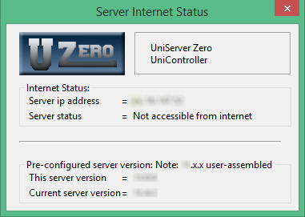
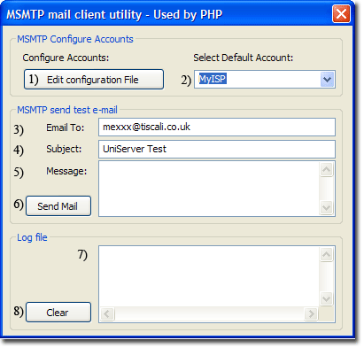

|
|
General |
The UniController General menu groups items that do not easily fit into other categories.
Server Internet status
The Server Internet Status menu opens a pop-up displaying current accessibility. It provides your IP address as seen from the Internet and confirms whether your server is accessible.
Server Internet status
General > Server Internet status
|
 |
If you have put your servers on-line, any user on the Internet now has access to your server by typing the following into their browser address bar: http://xxx.xxx.xxx.xxx/ (replace the x's with your IP address)
Possible Problems
- IP Address:
◦ No IP address. Your PC is not connected to the Internet! - Access:
◦ Must be connected to Internet and an IP address displayed.
◦ If your PC is connected to a router, you must forward port 80 and/or 443 in the router settings.
◦ Check the firewall for public access to the servers.
◦ Still no access? Is your service provider blocking port 80 and/or 443?
Mail utility msmtp
Although the email utility msmtp is primarily included to support the PHP mail function, it is independent in its own right. This allows you to send test e-mails without having PHP installed.
|
Mail utility msmtp Mail utility is configured and tested using this menu option. In addition, it displays the email log file content. General > Mail utility msmtp
|
 |
Note: For full msmtp details, see pages MSMTP - Introduction and MSMTP - Detail
Edit UniServer PAC file
This menu option allows you to edit the UniServer PAC file, UniController\home\us_pac\proxy.pac. Menu button is enabled when an Apache module is installed, for example ZeroXIV_apache_x_x_x.exe
General > Edit UniServer PAC file
Note: Creating an Apache Vhost automatically adds an entry to the PAC file. Entries in the PAC file resolve domain names to local host, allowing testing without the need for a DNS entry or Windows hosts file entry.
Clean-up delete logs
Over time, log files and access files become large. This menu item provides a convenient way to delete these files.
You can add other files and folders to delete or folders to clean as follows:
General > Clean-up delete logs
|
Configuration file: A configuration file (UniServerZ\home\us_config\us_clean_up.ini) allows you to define files and folders to delete and folders to clean (delete content only). List files and folders under the appropriate section: [FILES], [FOLDERS] or [FOLDERS_CONTENT].
Paths are relative to root folder UniServerZ\. For example, to delete file UniServerZ\core\msmtp\msmtp.log, specify the path shown in bold under section [FILES]. Another example, to delete folder UniServerZ\www\css, specify the path shown in bold under section [FOLDERS]. |
us_clean_up.ini - Default settings
;################################ ;# Name: us_clean_up.ini ;# Example of configuration file ;################################# [FILES] ;Delete following files: core\mysql\data\mysql.err core\msmtp\msmtp.log [FOLDERS] ;Delete following folders and all their content: [FOLDERS_CONTENT] ;Delete following folders content. Folder not deleted. core\apache2\logs tmp |
Note: If a file or folder does not exist, no action is taken and the next item in the configuration file is processed.
Portable and default browser
Menu items provide browser selection:
General > Portable browser
General > Default browser
Portable browser and Default browser menu items are initially disabled and UniController defaults to using a user’s default browser. After installing a portable browser module (for example ZeroXIV_palemoon_x_x_x.exe), UniController defaults to using that browser.
Installing a portable browser module enables the two menu items. These allow you to select the default browser in preference to the installed portable browser. In addition, you can switch between the two browsers as required.
Note 1: Restarting UniController with a portable browser module installed always defaults to the portable browser.
Note 2: To the left of each menu button is a check mark indicating the current selection.